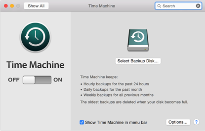

From the Apple menu, choose Software Update (your Mac needs to be connected to the Internet). Software Update will check for the new versions of your Apple software. If it finds any, the updates will appear in the Software Update window. Click the Install button to download and install the software.
Before you can use Time Machine, you need to select a backup destination. You can back up your files to an external hard drive (sold separately) connected to a USB, FireWire, or Thunderbolt port on your Mac. Time Machine keeps hourly backups for the past 24 hours. The oldest backups are deleted when your backup drive becomes full.
Setting up Time Machine is as simple as connecting an external drive to your Mac. If you haven't already specified a backup device, Time Machine will ask you when you connect a blank drive to your Mac if you want to use it for backing up.
Backing up happens automatically when your Time Machine drive is available. Your very first backup may take a while, depending on how many files you have on your startup disk. You can continue to use your Mac while Time Machine is working. Time Machine displays a notification after your first backup is complete, or if any issues happen during the initial back up.
Every time you open a program or document on your computer, the data related to the program is loaded into your Mac's RAM. The data should unload when you close the application or document, but this process is not always as clean as users might prefer. It is good to shut your Macbook down every few days to shake out the fragments of applications and documents that may be sitting in memory. Additionally, restarts are required to apply software updates.